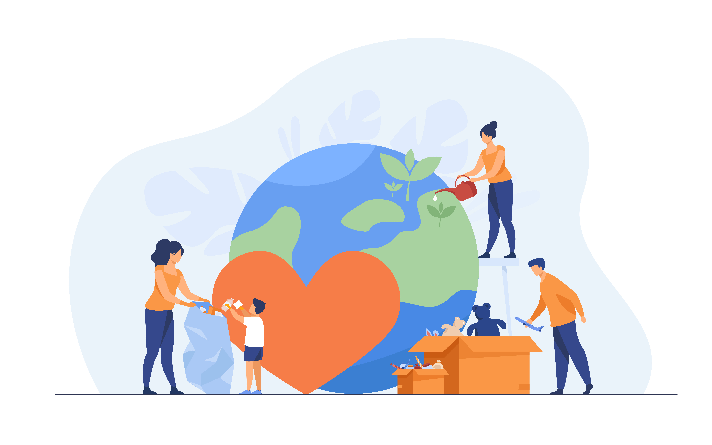
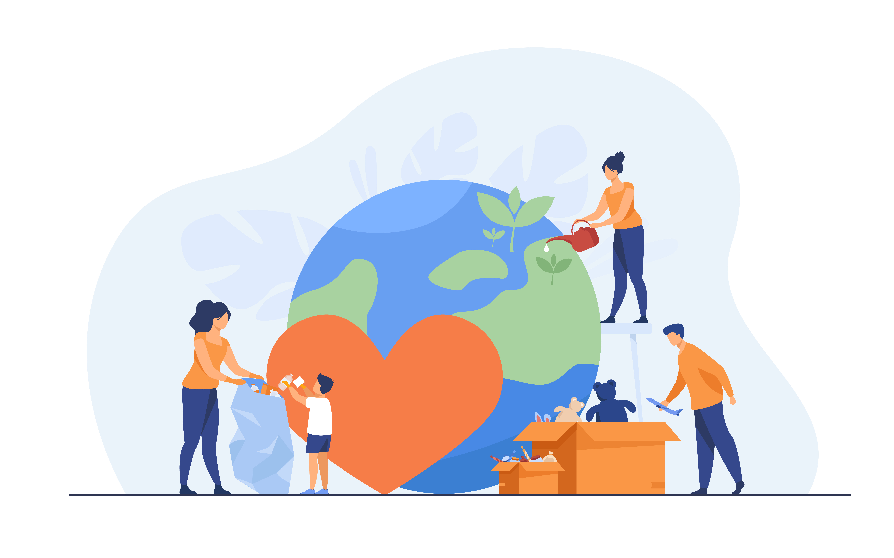

WikiML
Web app for the collaborative management of information and knowledge related to international development cooperation projects

Where does the idea of WikiML comes from?

Complexity and methodological variety
Low quality of the information produced
Disposable information
Not save environment for data security and privacy
So... what's the aim of WikiML?
Big database of methodologies, norms, standards, tutorials, etc

Collaboratively management
Global scope
Multi-language
Data privacy and security
Efficient planning process
What is the most important focus of the project?

Create a platform/webservice that is expected to improve development aid
Simplification of the application process for funding for partners in the global south
Break down power structures between donor countries (global north) and CAD countries
Reduce digital gap regarding information access
What situations have been difficult?

Scarce and very expensive internet in Cuba
Facing technical problems
Virtual team work
Patience/Acceptance for the things we can't change
Until this point, what are the key "lessons learnt"?
Things take time

Passion, dedication and a vision are the drive to success
The need of continuously rescheduling timelines when working on a project

Impressed how the team works on this digital format: team work makes the dream work
Be okay with change

At the beginning the project understanding the whole concept and its ramification were a huge information overload, now the picture is clearer and the pieces of the puzzle get connected
What aspects of the project are sustainable and which ones are not?
Sustainables
- Information and knowledge is been shared and saved with more opened access and transparency
- No material waste
- Infastructure
- The potential to strengthen communities worldwide
- Advantage of small projects to be seen and succeed
- With shared knowledge and more exchange between stakeholders the success rate of projects in DC can rise
Not sustainables
- The risk of limited access
- Leave no one behind
- The platform has to be under constant supervision
What is the outlook for the following month in the project and afterwards?
Continue developing the WikiMl web service prototype
Test WikiML functionalities by managing a real project
Continue developing the documentation on the functionalities of WikiML
Prepare the process of promotion of the software to donors (this is necessary to make the project successful). Good strategy for this challenge needed!
Continue preparing the Estrella de Cuba e.V for the presentation of funding requests to German donors

To become more acquainted with the methodology and the bureaucratic approach
Checkout our platform


 
